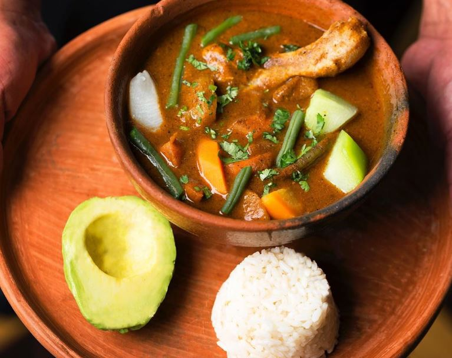

Pepian

Description
A delicious recipe from Guatemala, Pepian is one of the most famous dishes of the country, born from the mixture of two races
Below you will find the most common ingredients and way of preparation, but we aware that there are many othe ways of making this marvelous dish
Ingredients
- Pepita
- Chile pasa
- Chile Huaque
- Tomate
- Miltomate
- Cebolla
- Ajo
- Chile pimiento
- Semilla de girasol
- Carne de Res/pollo o venado
- Ejote
- Papa
- Guisquil
Steps
- Dorar en un comal la pepita, el chile pasa y huaque, el tomate, el miltomate, la cebolla, el Ajo
El chile pimiento y la semilla de girasol
- Mientras tanto cocer la carne en olla de presion hasta que este suave
- Una vez dorados los ingredientes que se pusieron en el comal, meterlos a la licuadora con el liquido de la carne
- Una vez preparado el recado, vertirlo sobre la carne y el agua que queda en la olla de presion
- Juntar la papa, el ejote y el guisquil a la mezcla
- Esperar a que todo este listo y sirvase caliente